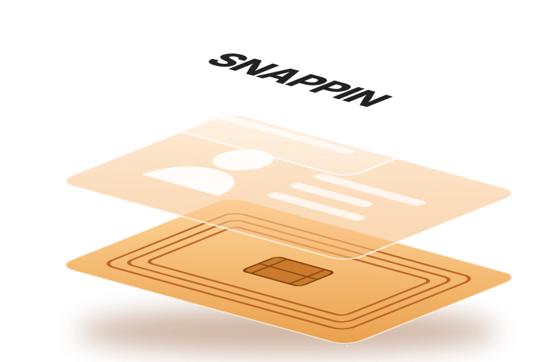
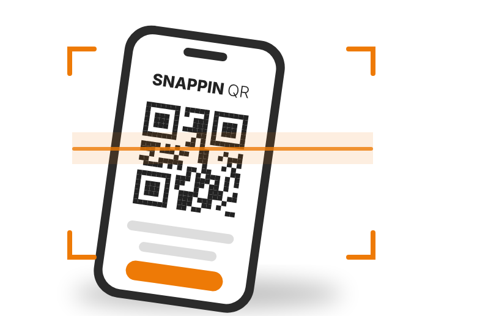
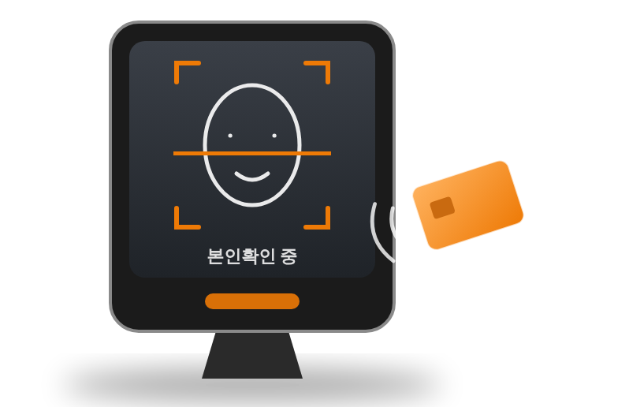
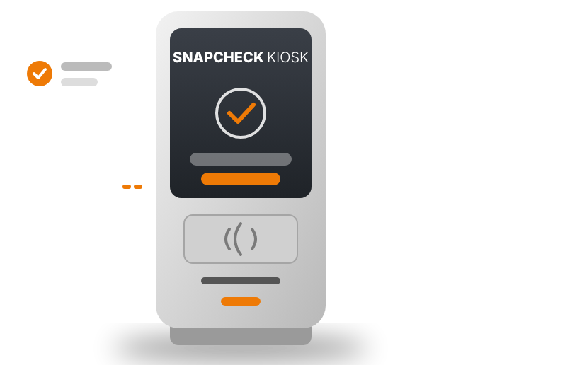

Solution Line-up
-
-
SNAPPIN-Physical Token
물리 접근 보안을 위한 사용자 보유 인증 토큰
CARD
SNAPPIN Physical Token은 RF/NFC 기반 물리형 인증 토큰입니다. 기존 물리보안 인프라와 연동 가능하며, 사용자의 인증정보를 암호화해 보관하고 SNAPCHECK MOAI와 연동하여 본인확인 기반 접근 인증을 수행합니다.
- 임직원 접근 인증
- 보안구역 접근
- 연구소·공장·공공시설
- 기존 RF/NFC 기반 보안 인프라 고도화

-
SNAPPIN-Mobile QR
카드 없이 스마트폰으로 쓰는 사용자 보유 인증 토큰
QR
SNAPPIN QR은 스마트폰에 발급되는 QR 기반 인증 토큰입니다. 별도 카드 없이 사용자의 인증정보를 모바일에 암호화해 보관하고, SNAPCHECK 단말과 연동하여 본인확인 기반 출입 인증을 수행합니다.
- 모바일 사원증·출입증
- 방문객·임시 출입 인증
- 행사·시설 입장 관리
- 카드 발급·관리 비용 절감

-
SNAPCHECK-MOAI
온디바이스 본인확인 인증 단말
DEVICE
SNAPCHECK MOAI는 사용자가 제시한 토큰과 현장의 생체정보를 단말 안에서 대조해 본인 여부를 확인하는 인증 단말입니다. 생체정보를 서버에 저장하지 않아 개인정보 노출 위험을 줄입니다.
- 얼굴 기반 본인확인
- SNAPPIN 카드·QR 토큰 연동
- 온디바이스 처리로 개인정보 보호
- 출입통제 시스템 연계

-
SNAPCHECK-KIOSK
무인 본인확인·출입 키오스크
KIOSK
SNAPCHECK KIOSK는 방문 등록부터 본인확인, 출입 승인까지 한 번에 처리하는 무인 키오스크입니다. 로비·안내데스크 업무를 줄이고, 방문 이력을 자동으로 기록합니다.
- 방문객 셀프 등록·본인확인
- SNAPPIN 토큰 현장 발급
- 무인 로비·안내데스크 운영
- 방문 이력 자동 기록

-
SPMS-MANAGEMENT
토큰·단말·인증 이력 통합 관리 시스템
SYSTEM
SPMS는 SNAPPASS 솔루션 전체를 한 화면에서 관리하는 통합 관리 시스템입니다. 토큰 발급과 회수, 단말 상태, 인증 이력을 실시간으로 확인하고 권한 정책을 손쉽게 운영할 수 있습니다.
- 토큰 발급·회수·재발급 관리
- 단말 상태 모니터링
- 인증·출입 이력 조회
- 사용자·구역별 권한 정책